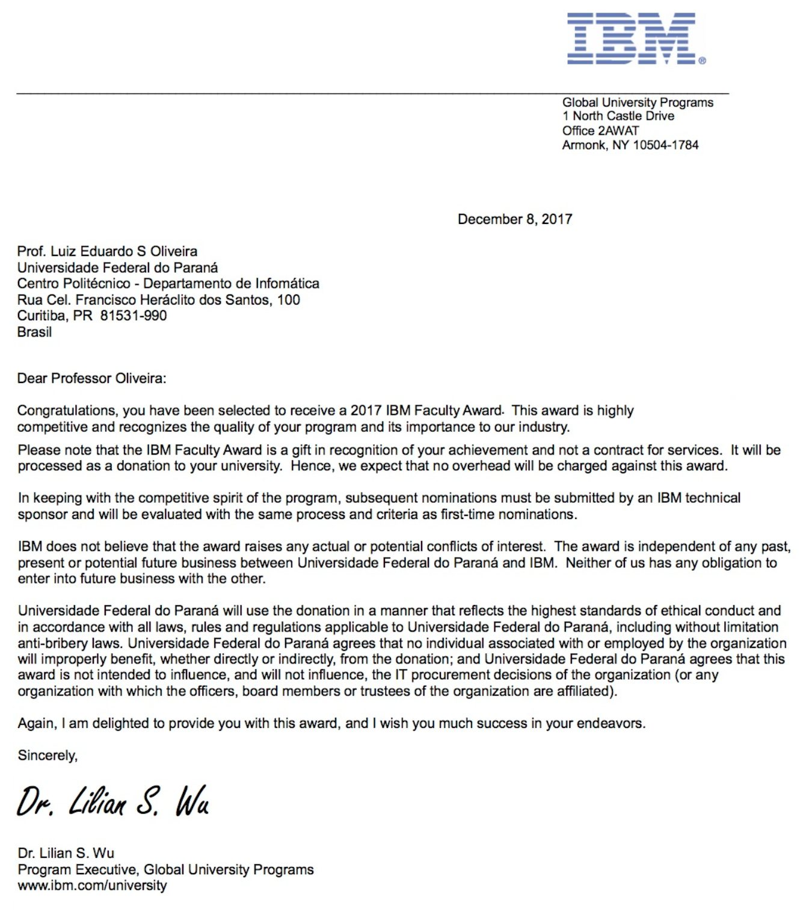

Research on Texture Classification has been recognized
IBM Faculty Award
Very glad to announce that I have been selected for the 2017 IBM Faculty Award, which is a competitive worldwide program intended to foster collaboration between researchers at leading universities worldwide and those in IBM research, development and services organizations. Thanks to my colleague at IBM Research, Dr. Paulo Cavalin, for our fruitful collaboration over the years.
